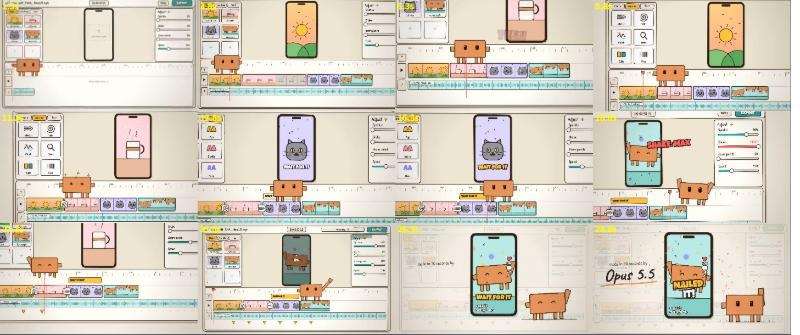

A1一物一史下一期线描留白 · 朱印标题
纯代码就能做，和频道头像的朱文印是同一种气质。也可以换成 A2 编年角色，讲主线更有画面感。
按你现在在做的三个系列，各挑一种最合适的。
纯代码就能做，和频道头像的朱文印是同一种气质。也可以换成 A2 编年角色，讲主线更有画面感。
画面明亮、歌词能做成大字，正好是《青衣》v2「画面太黑、只有 SVG 小人」的反面。人物要先用 AI 生图定好角色。

再借用 PDoom 项目的角色系统：换表情时先眨眼、挤压再弹出，线条每秒轻抖 12 次，做出手绘感。
点一张卡片，展开完整说明和大图。
文章和案例里反复出现的四步。提示词只占结果的一成，剩下的靠这套流程。